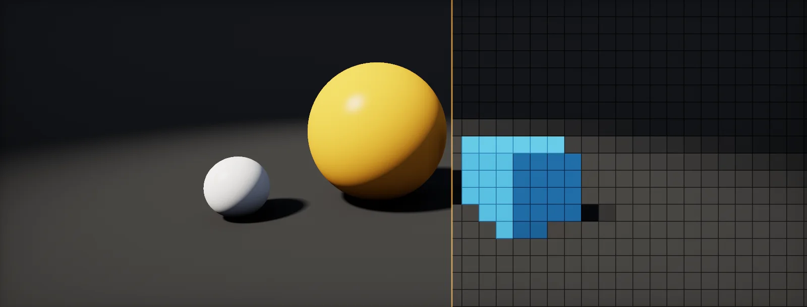

GPU Rendering Basics
Every technique on this site is a small change to one process: a GPU colouring every pixel of the screen, many times per second. This unit explains that process from zero.

Pixels
Everything a game shows is a picture made of small squares called . They are arranged in rows and columns, like squared paper. A 1920 × 1080 screen has 1920 pixels in each row and 1080 rows.
Each pixel holds one colour, stored as three numbers: how much red, green and blue light it emits. How those numbers work is its own lesson, colour as numbers. For now it is enough that a pixel is three numbers.
The number of pixels is the first number to know about any frame, because almost all the work a GPU does is done once per pixel. You get it by multiplying the two sides:
Try the common sizes. Going from 1080p to 4K does not double the pixels, it multiplies them by four, because both the width and the height double. That is why games that run well at 1080p often struggle at 4K.
Pixel shaders
The GPU's job is to find a colour for every pixel, every frame. It does that by running a small program once for each pixel. That program is called a (OpenGL and Vulkan call it a fragment shader).
You write the program for one pixel. The GPU then runs that same program for all of them. What makes the pixels different is the input: each run gets its own position on the screen. The lab below runs one tiny shader on a 24 × 14 grid. Every square runs exactly the code on the right, with its own uv.
uv is the pixel's position scaled to the range 0 to 1, so the same code works at any resolution: 0 is the left (or bottom) edge, 1 the right (or top) edge. How a pixel number turns into uv is shown step by step in From pixel to UV. The types in the code (float2, float4) are explained in Reading a shader: types.
Because the program runs for every pixel, every frame, its cost multiplies quickly:
At 4K and 60 frames per second the pixel shader runs about half a billion times per second. Every instruction you add to it is paid that many times, which is why shader cost matters so much (see What a shader costs).
Parallel execution
A CPU core runs one thing after another, very fast. A GPU instead has thousands of small cores and runs many pixels at once. It groups pixels into of 32 or 64 that execute the same instruction together, and it runs many waves side by side.
The order in which pixels are processed is not defined. Watch the lab: each run fills the screen in a different order.
Three rules follow from this, and almost every shader technique is shaped by them:
- A pixel cannot ask its neighbour for its result. The neighbour may not have run yet. If you need information from other pixels, an earlier pass has to write it into memory first, usually a texture (what a texture is) or a buffer (what a buffer is).
- Nothing is remembered between frames unless you store it in such memory yourself.
- All lanes of a wave run the same instruction. If they take different branches of an
if, the wave runs both (divergence).
How many waves a frame needs is a simple division, rounded up because a half-full wave still occupies a whole one:
Rasterization pipeline
Pixels are the end of the pipeline. The start is geometry. Every 3D model is made of triangles, and every triangle of three corner points called . Drawing one model goes through four stages:
- Vertex shader. A small program runs once per vertex and works out where that corner lands on the screen. The maths behind this is moving between coordinate spaces.
- Rasterization. Fixed hardware finds every pixel whose centre lies inside each triangle.
- Pixel shader. Runs once for every covered pixel and returns its colour.
- Output. The colour is written into an image in memory, the render target, after a depth test decides whether something nearer is already there.
The rasterizer's test is a small formula you can try yourself. For an edge from corner a to corner b, the says on which side of the edge a point p lies: positive on one side, negative on the other, zero on the line. A pixel is inside the triangle when all three edges give the same sign.
This formula is a 2D cross product. You do not need to write it yourself, the hardware does it, but knowing it explains two things you will meet later: why pixels exactly on a shared edge are handled by a tie-break rule so they are never drawn twice, and why tiny triangles waste work (quads and tiny triangles).
Frames and frame time
All of the above happens for every object, and the finished picture is shown. Then the game moves everything a little and does it all again. One finished picture is a ; how many frames appear per second is the frame rate.
Performance is easier to reason about in the time one frame may take, the frame budget, than in frames per second.
Build it in Unity HDRP
Two small exercises make this unit concrete: a first Shader Graph that colours every pixel by its own position, and a script that shows your frame time against the budget. Written for Unity 6 with HDRP 17; Unity 2022 LTS works the same apart from a few renamed menu entries.
- Create the graph: in the Project window, Create > Shader Graph > HDRP > Unlit Shader Graph. Open it and check the Graph Inspector > Graph Settings.
- Add a UV node and connect it to Base Color. Every pixel now shows its own UV as red and green: the same program, a different input per pixel.
- Save
PixelGrid.hlsl(below) anywhere underAssets, for exampleAssets/Shaders/Atlas/. - Add a Screen Position node with Mode set to
Pixel: it gives each pixel its position in whole pixels. - In the graph, add a Custom Function node. Set Type to
File, Source toPixelGrid.hlsland Name toPixelGrid(without the_floatsuffix). Add the inputs PixelPos (Vector 2), Cell (Float) and the outputs Out (Vector 3), in that order and with those types: they must match the function's parameters. - Connect Screen Position to PixelPos, a Float property
Cell(default 8) to Cell, and Out to Base Color. Right-click the graph and choose Create > Material, then assign the material to an object. Change the Game view resolution: the checker stays locked to the screen, not to the object. - Add
FrameBudget.csto any GameObject and enable Project Settings > Player > Other Settings > Frame Timing Stats. Press Play to see CPU and GPU time next to the budget.
#ifndef PIXEL_GRID_INCLUDED
#define PIXEL_GRID_INCLUDED
// Colours blocks of Cell x Cell screen pixels as a checkerboard,
// so you can see that the shader runs once per pixel.
void PixelGrid_float(float2 PixelPos, float Cell, out float3 Out)
{
float2 c = floor(PixelPos / max(Cell, 1.0));
float k = fmod(c.x + c.y, 2.0);
Out = lerp(float3(0.08, 0.08, 0.10), float3(0.95, 0.55, 0.20), k);
}
#endifusing UnityEngine;
// Shows CPU and GPU frame time next to the budget for a target frame rate.
// Requires Project Settings > Player > Other Settings > Frame Timing Stats.
public class FrameBudget : MonoBehaviour
{
public float targetFps = 60f;
readonly FrameTiming[] timings = new FrameTiming[1];
double cpuMs, gpuMs;
void Update()
{
FrameTimingManager.CaptureFrameTimings();
if (FrameTimingManager.GetLatestTimings(1, timings) > 0)
{
cpuMs = timings[0].cpuFrameTime;
gpuMs = timings[0].gpuFrameTime;
}
}
void OnGUI()
{
float budget = 1000f / targetFps;
string slow = cpuMs > gpuMs ? "CPU" : "GPU";
GUI.Label(new Rect(10, 10, 600, 24),
$"Budget {budget:0.0} ms CPU {cpuMs:0.0} ms GPU {gpuMs:0.0} ms (slowest: {slow})");
}
}The GPU number is the one to compare with the frame budget when you work on shaders. For a detailed breakdown, open Window > Analysis > Profiler (GPU module) or the HDRP Rendering Debugger, covered in Frame Profiling.
Create an Unlit Shader Graph under Shader Graph > URP; the nodes, the HLSL file and the script are identical.
Make a Material with Shading Model: Unlit, connect TexCoord to Emissive Color, and use ScreenPosition (pixel position output) with a Custom node holding the PixelGrid body. stat unit in the console shows Game, Draw and GPU time.
Sources and further reading
The formulas and engine details in this unit come from these references. Engine documentation changes between versions.
- SeriesA trip through the Graphics Pipeline 2011Fabian GiesenWhat the hardware does between a draw call and a pixel, in depth.
- ArticleLife of a triangle: NVIDIA's logical pipelineNVIDIAHow a GPU splits work into warps, rasterizes triangles and shades pixels.
- TutorialThe Book of ShadersPatricio Gonzalez Vivo, Jen LoweA gentle, interactive start to pixel shaders.